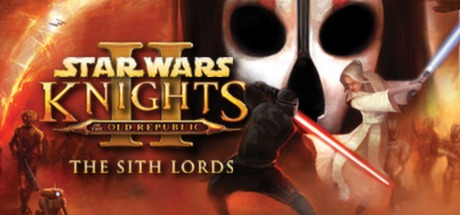

The Sith Lords. One tracker per build.
Force-heavy Consular with a double-bladed blue saber. Near-Light and Legends-consistent, with planet order, companion pairings and the Kreia influence problem worked out.